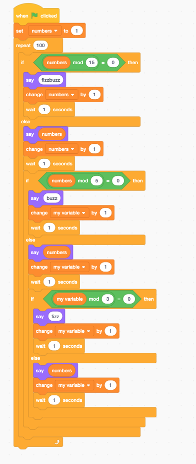

I pushed my coding journal online and worked on my design for the computer science lab!
I worked on my coding jornal and created a computer science room design website!
I worked on my candy vending machine projects and added some finishing touches to my coding website!
I worked on my candy vending machine website. I tried to use java script to make the candy draggable with the goal of being able to drag candy into a shopping cart.
I worked onmy candy machine and made a code that allows you to select the candy you want and place it in the cart. I still need to figure out a way to make it drag into the cart.
I worked on my candy mechine layout and coded a program in sketch. The program writes out numbers 1-100 but for every multiple of 3 says "fizz" every multiple of 5 says "buzz" and every multiple of 15 says "fuzzbuzz" instead of the number.
Today I reserched different ways to make a div draggable in javascript for my candy machine project.
Today I went for a lab to work on my cnady vending machine and made significant progress. The divs now are all movable by clicking on the one you choose to select. I also adjusted the coordinates of the divs to have them appear centered over the mouse where you click but I still need to figure out a way to have this happen when you are not scrolled to the very top of the page.
Today in class I made a random dog generator that when you click on the screen randomly gives you a picture of a cute funny dog
In class recently we have been working with java script a bunch. We had an assignment to create a small project in javascript and I linked to to my projects page
Today I worked a lot on trying to make the divs in my candy machine draggable instead of simp,y clicking and placing. I didn't start making a function but I spent a lot of time reading on W3 Schools and I think next time I have enough time I will be able to start making a function
In class we discussed our project ideas and I linked a list of my ideas to my project section of my home page
Today I started my function to make the divs draggable instead of click and place in my chandy machine project. I made a function that I thought would work correctly and I think I'm on the right track I just need to work the issues out.
Today overbreak I got board and figured I could put my time to good use by editing and bettering my rnadom dog generaton. I added more dogs and and made the appearence of the project more appealing.
Today was our first class back after break. We spoke about potential class projects we could complete and different ideas for fun things to make. We did a javascript lesson and spent time translating the javascript into english.
Yesterday we had class and we talked some more about projects we could complete. I thought making a live temple run using makey makey's could be a fun idea. In addition, was talked about making a picture book with drawings and stories we could present to the younger kids at little dalton.
We had class today and we started making our "magic tricks". I am making one that randomly places thousands of gummy worms thtoughout the screen. I am having a little trouble getting them to reposition using a button rather than just reloading the entire page. The script works by creating a variable for me it's worms and randomly placing them throughout the screen every 100 millaseconds. I still need to create and erase button to clear all of the worms.
Ella helped me add a clear button to my website that added and event listener for when a div called "clear" was clicked. When it is clicked the event listener sets all of the worms on the screen to have an opacity of 0
I made a random picture generator of my dog for my family as a valentine. I saved all of the pictures to my desktop and named them teddynumber1-20.png so I could create a function that randomly displays them. This function is in javascript and uses an event listener "when click" to get a picture to appear randomly. I then added little details to make the website more appealing like adding a dotted border and changing the font. I want to figure out if there is a way to make the dotted border and imagine instead of plain hearts so I can make it hearts or something cute like that
Today I started trying to come up with ideas for my next project. I looked at the 180 days of coding website and inspected the code from many of the sketches posted to figure out if there was anything original I could do with aspects of the code that I wouldn't have been able to think of on my own. I found a few projects on that website that I think I will be able to use to help be create a fun game or interactive site.